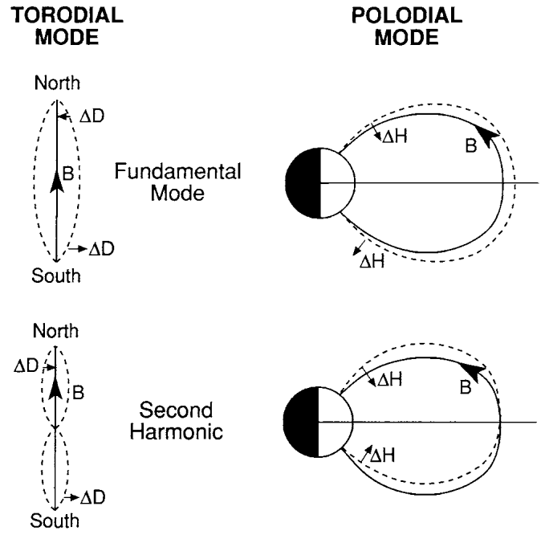
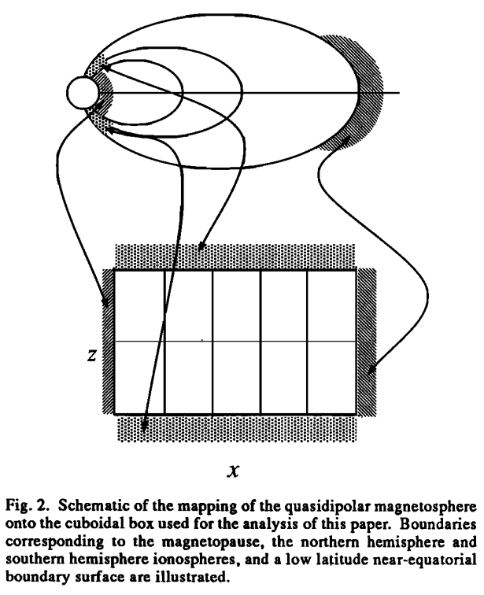
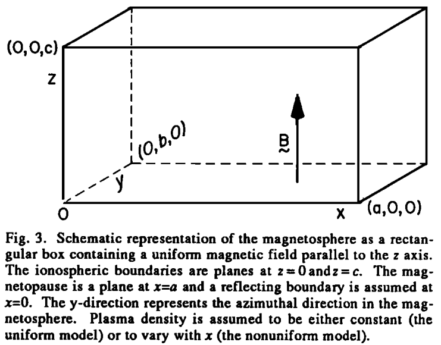
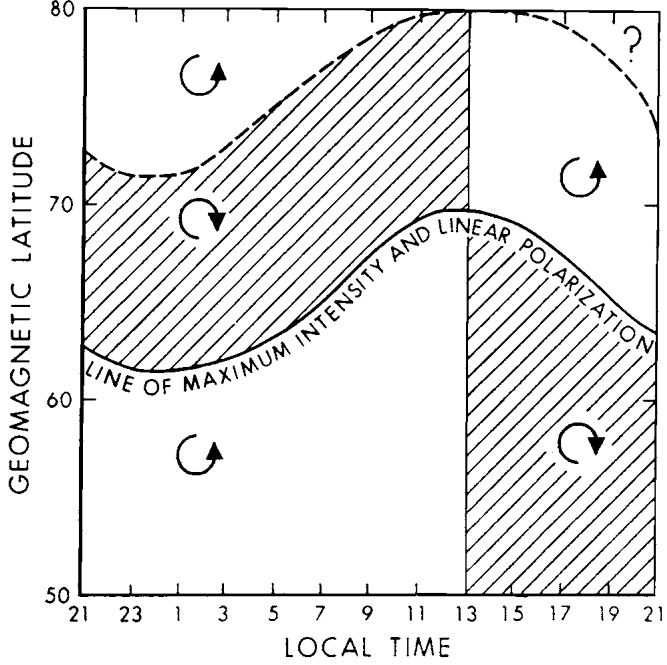
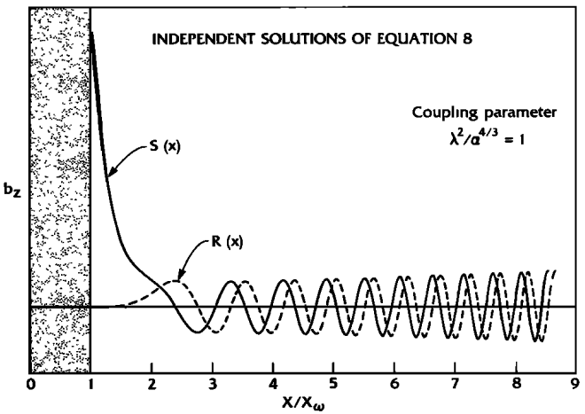
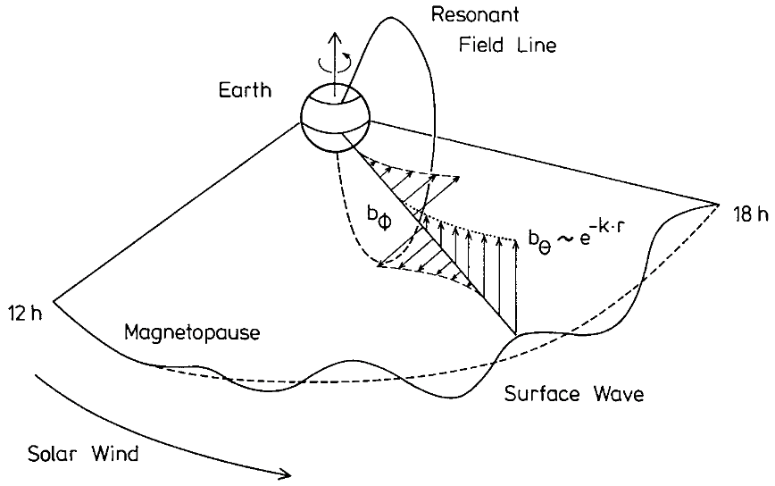
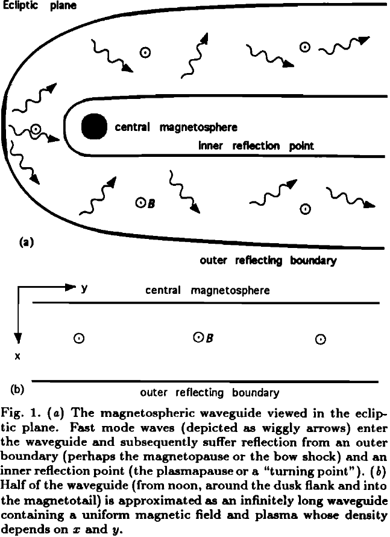
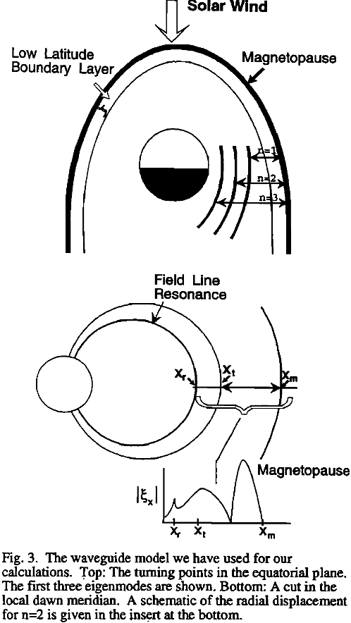

12 Field Line Resonance
The resonant mode coupling is one of major physical processes in the space plasmas including the magnetic reconnection and collisionless shock wave. The field line resonance describes the resonant interaction between compressional fast waves and shear Alfvén waves in a non-uniform plasma such as the Earth magnetosphere. The concept of this resonant mode coupling was first outlined by Tsutomu Tamao in 1961 and later discussed in his seminal paper on hydromagnetic coupling resonances (Tamao, 1965). Experimental work by John Samson+ (1971) made resonant mode coupling the current paradigm of planetary magnetospheric ULF wave research. Thinking of magnetosphere as a microwave oven: instead of heating food with microwaves, we heat Earth with EM waves.
12.1 Historial Review
Before 1950s, no people thought about the idea of standing waves in space simply because a vacuum had been assumed. Right after the space age began, Dungey proposed that standing Alfvén waves could be excited on geomagnetic field lines.
- Ground observations have shown discrete frequencies for EM wave power. In the magnetosphere the Alfvén speed is typically \(\sim 1000\,\text{km/s}\), while typical periods of geomagnetic pulsations are 10-600 s. Thus typical wavelengths are \(10^4-10^6\,\text{km}\), or \(1-100\,\text{R}_E\), comparable with the size of the magnetosphere itself. So uniform plasma theory is clearly inadequate.
- In the 1950s people realized that MHD waves of poloidal and toroidal modes can be coupled, and if we thought the modes as standing waves, we might explain the discrete frequencies. However, good agreements were not found because there were poor estimates of the magnetospheric plasma density.
- In the 1960s, [Sugiura 1961] showed that waves are observed simultaneously at both ends of the same field line, which indicated that the waves were guided. [Nagata+ 1963] showed pulsations at conjugate points could be matched cycle for cycle. The phase comparison could indicate the possible harmonics of standing waves. [Patel 1965] reported discovery of both transverse and compressional waves in space from Explorer 12 magnetometer data that are correlated with ground measurements, confirming that they were the same. [Cummings+ 1969] showed long-lived and frequent waves with nice numerical comparison of their periods from the poloidal and toroidal mode equations.
- In the 1970s a simpler box model was proposed to explain field line resonance. The idea of standing waves could not explain why only some field lines are preferentially excited (with the foot point of the field line near magnetic latitude \(70^o\)). In the box model, discrete frequencies are treated as sources that reflect the properties of the magnetopause thickness with a preferred KHI growth rate.
- In the 1980s the cavity model was proposed to link the discrete frequencies to the eigenmodes if we treated the magnetosphere as a cavity.
- In the 1985s the waveguide model was proposed based on the cavity idea to loose the constrain in the azimuthal direction. This could explain many ground observation of discrete frequency, large amplitude Pc5 waves but satellite measurements often saw small amplitude Pc3/4 waves. Unlike field line resonances, which are described by a single eigennumber (\(k_z\)), cavity modes have three eigennumbers, corresponding to the number of wavelengths along a field line (\(k_z\)), azimuthally around the Earth (\(k_y\)), and radially between the magnetopause (or bow shock) and the inner reflection point (\(n\)). It is argued in the 1990s that if the lowest order mode has a frequency of, say, 2 mHz, then above perhaps 10 mHz the higher order modes will be so numerous and close in frequency that they could probably not be resolved in the data given their inherent width and the frequency resolution of a typical spectrum. Rather they would appear as a continuum. As a continuum, they can not be responsible for exciting discrete frequencies in this higher frequency band (corresponding to Pc3/4). Maybe the waveguide model is only relevant to Pc5 pulsations?
Now, the big question is: where do the quantized numbers of the observed ULF waves come from [Kivelson & Southwood, 1986]?Researchers borrowed ideas from ionospheric radio propagation, laser fusion and plasma physics and came up with the names cavity and waveguide. For the box model that we will discuss in the next section, if the \(z\) boundaries are perfectly reflecting, wave fields must have standing structure in the \(z\) direction, and allowed parallel wave numbers are quantized (\(k_z = m\pi/c\), as in Equation 12.19). If the boundaries are weakly absorptive, the parallel wave numbers are complex, but the real parts are still quantized as above. If we impose periodic boundary conditions in \(y\), the wavenumber in \(y\) \(k_y\) needs to be quantized as well.
Another question: if these discretized frequencies correspond to standing waves propagating along the field lines, at the footprints (i.e. ground measurements) the amplitudes shall be the smallest? Why are we still able to observe that on the ground?
12.2 Theory
The theory starts from linearized cold MHD Equation 7.26 and Equation 7.27.
12.2.1 Axisymmetric Spherical Coordinates
First, let’s treat the problem in spherical coordinates \((r,\theta,\phi)\), as done by (Radoski and Carovillano 1966).
The background density is taken to be only a function of the radial distance, \(\rho = \rho(r)\). In the analysis below the perturbed variables, \(\mathbf{B}_1\), \(\mathbf{E}\), \(\mathbf{j}\) and \(\mathbf{u}\) are treated as axisymmetric, i.e. in spherical coordinates any perturbed function has the form \[ \mathbf{\delta} = \delta_r(r,\theta)\hat{r} + \delta_\theta(r,\theta)\hat{\theta} + \delta_\phi(r,\theta)\hat{\phi} \]
Under this symmetry, the variables can be separated into two independent sets referred to as the toroidal and poloidal variables:
- Toroidal variables
\(B_{1\phi}, E_r, E_\theta, u_\phi, j_r, j_\theta;\, \nabla\cdot\mathbf{u} = \frac{1}{r\sin\theta}\frac{\partial u_\phi}{\partial \phi}\equiv 0\) (incompressible)
- Poloidal variables
\(B_{1r}, B_{1\theta}, E_\phi, u_r, u_\theta, j_\phi ;\, \nabla\cdot\mathbf{E} = \frac{1}{r\sin\theta}\frac{\partial E_\phi}{\partial \phi}\equiv 0\)
The name of the set were originally based on the magnetic field perturbation directions. One insight into these two sets of variables can be gained from the Poynting vector \(\mathbf{S}\). The simplest MHD Ohm’s law constrains the electric field \(\mathbf{E}\) to be perpendicular to the background magnetic field \(\mathbf{B}_0\). For the toroidal mode, \(\mathbf{E}\) lies in a meridional plane and \(B_{1\phi}\) is out of plane, so \(\mathbf{S}\) is directed along the field lines. For the poloidal mode, \(\mathbf{S}\) is in a meridional plane and parallel to the wave vector \(\mathbf{k}\), because \[\mathbf{B}_1 = -i\mathbf{k}\times\mathbf{E}\Rightarrow \mathbf{S}\parallel\mathbf{E}\times\mathbf{B}_1 \parallel \mathbf{E}\times(\mathbf{k}\times\mathbf{E})=E^2\mathbf{k} - \cancel{(\mathbf{E}\cdot\mathbf{k})}\mathbf{E} \parallel \mathbf{k} \] for a transverse EM wave (\(\mathbf{E}\perp\mathbf{k}\)). Thus the toroidal mode is an Alfvén mode with dispersion relation \(\omega = V_A k \cos\theta\), \(\mathbf{S} \parallel \mathbf{B}_0\), while poloidal mode is a fast mode with dispersion relation \(\omega = V_A k\), \(\mathbf{S} \parallel \mathbf{k}\).
To clarify my early misunderstanding: a toroidal mode is not propagating in the toroidal direction! Similarly, a poloidal mode does not propagate in the poloidal direction. In fact, it is more common to have a fast poloidal mode propagating in the azimuthal direction, then coupling to the Alfvén toroidal mode along the ambient magnetic field direction, then being observed on the ground. Table 12.1 from (Zong, Rankin, and Zhou 2017) summarizes properties of toroidal and poloidal mode standing ULF waves.
| ULF mode | Magnetic field | Electric field | Wave number |
|---|---|---|---|
| Toroidal waves | B_azimuthal (\(B_\phi\)) | E_radial (\(E_r\)) | Small wave number m |
| Poloidal waves | B_radial (\(B_r\)) | E_azimuthal (\(E_\phi\)) | Large wave number m |
| Compressional poloidal waves | B_parallel (\(B_\parallel\)) | E_azimuthal (\(E_\phi\)) | Large wave number m |
For the axisymmetric poloidal electric field \(E_\phi \sim e^{i\omega t}\), Equation 7.26 becomes (I HAVEN‘T DERIVED THIS!) \[ B_0^2[\nabla^2 - (r^2 \sin^2\theta)^{-1}] E_\phi = -\mu_0 \rho \omega^2 E_\phi \]
This is the decoupled poloidal wave equation. For a dipole field, \(B_0^2 = \frac{M^2(1+3\mu^2)}{r^6}\), where \(M\) is the magnetic moment and \(\mu = \cos\theta\) is the colatitude. A solution for \(E_\phi\) is sought after a separation of the unknowns of the form \[ E_\phi = \sum_{l=1}^{\infty} f_l(r) P_l^m(\mu) \] where \(P_l^m\) is the associated Legendre function with integer indices \(l\) and \(m\). Why this form you may ask? It’s a mathematical hypothesis based on experience and talents. With this representation the poloidal wave equation becomes \[ \sum_{l=1}^{\infty}[(1+3\mu^2)O_l + 2K^2] f_l P_l^m = 0 \tag{12.1}\] where \(K^2 = \frac{\mu_0 \rho}{2}\big( \frac{\omega^2 r^2}{M^2}\big)^2\) (maybe the coefficient is wrong) and \(O_l\) is the spherical Bessel operator \[ O_l = \frac{1}{r}\frac{\partial^2}{\partial r^2}r - \frac{l(l+1)}{r^2} \]
(This is almost out of my control now. If I want to fully understand this, I need to go back to math equations for physics!!!) The special property of Legendre polynomials allows us to write the solution to the wave equation as \[ \sum_{s = 0,\pm 2} a_{l+s} O_{l+s} f_{l+s} + K^2 f_l = 0 \tag{12.2}\] where the constants coefficients are \[ \begin{aligned} a_{l+2} &= \frac{3(l+2)(l+3)}{2(2l+3)(2l+5)} \\ a_{l} &= \frac{5l(l+1)-6}{(2l-1)(2l+3)} \\ a_{l-2} &= \frac{3(l-2)(l-1)}{2(2l-3)(2l-1)} \end{aligned} \]
From Equation 12.2, we know that radial amplitudes of opposite parity do not couple. Since only \(l\ge 1\) occurs in Equation 12.1, there are two fundamental unknown radial amplitudes: one for odd \(l\) and one for even \(l\).
We assume perfect reflection at the boundaries so that the transverse components of \(E\), i.e. \(E_\theta\) and \(E_\phi\), are zeros. The walls are assumed to be rigid so that \(u_r = 0\). The normal component of \(\mathbf{B}_1\) also vanishes from the governing equations.
The toroidal wave equation seems to be too complicated for me following Radoski’s derivations…

From the boundary condition, the length \(l\) of the field line between two reflection point must be a multiple of half the wavelength \(\lambda\), implying \[ n\lambda = 2l,\quad n = 1,2,3,... \]
From the dispersion relation, with the average Alfvén speed \(<V_A>\), one finds: \[ \omega_n = <V_A> k = <V_A>\frac{2\pi}{\lambda} = \frac{n\pi<V_A>}{l} \]
12.2.2 Cylindrical Coordinates
In cylindrical coordinates \((r,\phi,z)\), assuming perturbations of the form \(e^{i(m\phi - \omega t)}\), we can separate the linearized equations ((Hughes 1994) I HAVEN’T DERIVED THIS!), \[ \Big[ \omega^2 \mu_0 \rho - \frac{1}{r}(\mathbf{B}_0\cdot\nabla)r^2(\mathbf{B}_0\cdot\nabla) \Big]\frac{u_\phi}{r} = \omega m \frac{\mathbf{B}_0\cdot\mathbf{B}_1}{r} \tag{12.3}\]
\[ \Big[\omega^2 \mu_0 \rho - rB^2 (\mathbf{B}_0\cdot\nabla)\frac{1}{r^2 B^2}(\mathbf{B}_0\cdot\nabla) \Big]rE_\phi = i\omega B^2 (\mathbf{B}_0\times\nabla)_\phi \Big( \frac{\mathbf{B}_0\cdot\mathbf{B}_1}{B^2} \Big) \tag{12.4}\]
\[ i\omega \mathbf{B}_0\cdot\mathbf{B}_1 = \frac{1}{r}(\mathbf{B}\times\nabla)_\phi (rE_\phi) - imB^2\frac{u_\phi}{r} \]
The first two equations are from the momentum equation. \(\mathbf{B}_0\cdot\nabla\) is the derivative along the direction of \(\mathbf{B}\). These are wave equations coupled by the terms on the RHS which depend on \(\mathbf{B}_0\cdot\mathbf{B}_1\), the compressional part of the magnetic perturbation. The third equation is from Faraday’s law and Ohm’s law. It shows how \(\mathbf{B}_0\cdot\mathbf{B}_1\), \(E_\phi\) and \(u_\phi\) are related and closes the set. Since the transverse dispersion relation depends only on \(k_\parallel\), it is tempting to think of the LHS of Equation 12.3 and Equation 12.4 as representing pseudo-transverse mode oscillations, and the RHS as representing the coupling due to the fast mode which has a compressional component. When \(m\neq 0\), the phase variation of the toroidal mode in the \(\phi\) direction leads to a compressional perturbation in the magnetic field. The polarizations of the toroidal and poloidal oscillations are no longer orthogonal, and thus there is coupling.
If \(m = 0\) the RHS of Equation 12.3 vanishes. The LHS then describes a mode in which the electric field is purely radial and the magnetic and velocity perturbations are azimuthal. Magnetic L shells decouple and each shell oscillates azimuthally independently of each other. This is the Alfvénic toroidal mode. If \(m\rightarrow\infty\), for the RHS to remain finite, \(\mathbf{B}_0\cdot\mathbf{B}_1\rightarrow0\) so the RHS of Equation 12.4 vanishes. Equation 12.4 then describes a mode in which \(\mathbf{E}\) is azimuthal and \(\mathbf{u}\) and \(\mathbf{b}\) are contained in a meridian plane. This is the compressional poloidal mode.
12.2.3 Cartesian Box Model
Earliest theories had cold ideal MHD equations Equation 7.26 or Equation 7.27 expressed in the spherical or cylindrical coordinates, which are not easy to solve. As we will see, the essence of FLR can be obtained in the Cartesian coordinates. We simplify the actual dayside magnetosphere, which like a compressed dipole, to something we can solve analytically. Imagine a field line with both footpoints connecting to the conducting ionosphere, we can map this curved field line into a straight line extending along \(z\). In the \(x\)-direction, the outer boundary is the magnetopause, and the inner boundary is the reflection point (plasmapause or ionosphere). The \(y\)-direction represents the azimuthal direction, therefore at the front of the magnetosphere it is more aligned with the \(y\)-direction in GSE/GSM and at the flanks/sides it is more aligned with the \(x\)-direction. If the length in \(y\) is finite (\(b < \infty\)), we call it a cavity; if the length in \(y\) is infinite (\(b\rightarrow \infty\)), we call it a waveguide. The names cavity and waveguide are inherited from electrodynamics. This is shown in the schematic Figure 12.2 and Figure 12.3.


Along the \(z\)-direction, we impose the ionospheric boundary for closed field lines \(u_x = u_y = B_{1z} = 0\). Because of the ideal MHD assumption, the electric field along the field lines \(E_z = 0\). In the \(y\)-direction, we impose either a periodic boundary condition for the cavity model that leads to a quantized wavenumber \(k_y\), or a infinite boundary. In the \(x\) direction, the boundaries are provided by large \(V_A\) gradients at both the outer boundary \(x_m\) (magnetopause) and the inner boundary \(x_t\) (plasmapause). We impose a reflective boundary \(u_x = 0\) at \(x = x_t, x_m\). The inhomogeity in \(x\) means that we can only consider Fourier components in the \(y\) and \(z\) directions. Therefore, we seek wave modes of the form \(\propto \exp[i(k_y y + k_z z - \omega t)]\) with the ansatz
\[ \begin{aligned} \mathbf{k} &= (0, k_y, k_z) \\ \mathbf{E} &= (E_x(x), E_y(x), 0) e^{i(k_y y + k_z z - \omega t)} \\ \mathbf{B}_1 &= (B_{1x}, B_{1y}, B_{1z}) e^{i(k_y y + k_z z - \omega t)} \\ \mathbf{B}_0 &= B_z \hat{z} = B\hat{z} \\ \rho &= \rho(x) \\ \mathbf{u} &= \mathbf{u}_0 + \mathbf{u}_1 = \mathbf{u}_1 \end{aligned} \]
The linearized momentum Equation 7.25 gives
\[ \begin{aligned} \rho\Big(\frac{\partial\mathbf{u}}{\partial t} + \cancel{\mathbf{u}\cdot\nabla\mathbf{u}}\Big) &= \mathbf{j}\times\mathbf{B} \\ \rho\frac{\partial\mathbf{u}}{\partial t} &= \frac{1}{\mu_0}(\nabla\times\mathbf{B})\times\mathbf{B} \end{aligned} \]
Separating the two perpendicular \(x\) and \(y\) directions and applying plane wave decomposition,
\[ \begin{aligned} -i\omega\rho\mu_0 u_x &= (\nabla\times\mathbf{B}_1)_y B_z - (\nabla\times\mathbf{B}_1)_z \cancel{B_y} \\ &= \Big(\frac{\partial B_{1x}}{\partial z} - \frac{\partial B_{1z}}{\partial x}\Big) B \\ &= -\frac{\partial}{\partial x}\Big( B B_{1z} \Big) + i k_z B B_{1x} \end{aligned} \]
\[ \begin{aligned} -i\omega\rho\mu_0 u_y &= (\nabla\times\mathbf{B}_1)_z \cancel{B_x} - (\nabla\times\mathbf{B}_1)_x B_z \\ &= \Big(\frac{\partial B_{1y}}{\partial z} - \frac{\partial B_{1z}}{\partial y}\Big) B \\ &= k_z B B_{1y} - k_y B B_{1z} \end{aligned} \]
From the simplest form of the generalized Ohm’s law \(\mathbf{E} = -\mathbf{u}_1 \times\mathbf{B}_0\),
\[ \begin{aligned} E_x &= - u_y B \\ E_y &= - u_x B \end{aligned} \]
Inserting into the linearized momentum equation, we have
\[ \begin{aligned} -i \omega \rho \mu_0 \frac{E_y}{B} &= -\frac{\partial}{\partial x}\Big( B B_{1z} \Big) + i k_z B B_{1x} \\ \omega \rho \mu_0 \frac{E_x}{B} &= - k_y B B_{1z} + k_z B B_{1y} \end{aligned} \tag{12.5}\]
From linearized Faraday’s law \(\nabla\times\mathbf{E} = -\dot{\mathbf{B}_1}\),
\[ \begin{aligned} -\frac{\partial E_y}{\partial z} &= -\dot{B_{1x}} \\ \frac{\partial E_x}{\partial z} &= -\dot{B_{1y}} \\ \frac{\partial E_y}{\partial x} - \frac{\partial E_x}{\partial y} &= -\dot{B_{1z}} \end{aligned} \]
\[ \begin{aligned} B_{1x} &= \frac{1}{\omega}(- k_z E_y) \\ B_{1y} &= \frac{1}{\omega}(k_z E_x) \\ B_{1z} &= \frac{1}{\omega}\Big(-i\frac{\partial E_y}{\partial x} - k_y E_x\Big) \end{aligned} \tag{12.6}\]
Substituting Equation 12.6 into Equation 12.5 gives
\[ \begin{aligned} -i \omega \rho \mu_0 \frac{E_y}{B} = -\frac{\partial}{\partial x}\Big[ B \frac{1}{\omega}\Big(-i\frac{\partial E_y}{\partial x} - k_y E_x\Big) \Big] + i k_z B \frac{-k_z}{\omega} E_y \\ -i \big( \omega^2 \rho \mu_0 / B^2 - k_z^2 \big)E_y = k_y \frac{\partial E_x}{\partial x} - i \frac{\partial^2 E_y}{\partial x^2} \end{aligned} \]
\[ \begin{aligned} -i \omega \rho \mu_0 \frac{E_x}{B} = k_z B \frac{k_z}{\omega} E_x - k_y B \frac{1}{\omega}\Big(-i\frac{\partial E_y}{\partial x} - k_y E_x\Big) \\ \big( \omega^2 \rho \mu_0 / B^2 - k_y^2 - k_z^2 \big)E_x + i k_y\frac{\partial E_y}{\partial x} = 0 \end{aligned} \]
Let \(R^2 = \mu_0 \rho(x) \omega^2 / B^2 = \omega^2/V_A(x)^2\), we have
\[ \begin{aligned} -i (R^2 - k_z^2)E_y = k_y \frac{\partial E_x}{\partial x} - i \frac{\partial^2 E_y}{\partial x^2} \\ (R^2 - k_y^2 -k_z^2)E_x + i k_y\frac{\partial E_y}{\partial x} = 0 \end{aligned} \tag{12.7}\]
Eliminating \(E_x\) from Equation 12.7 gives
\[ \frac{\partial^2}{\partial x^2}E_y - k_y^2 \frac{\partial}{\partial x}R^2(x)\frac{1}{(R^2 - k_z^2)(R^2 - k_z^2 - k_y^2)}\frac{\partial E_y}{\partial x} + (R^2 - k_z^2 - k_y^2)E_y = 0 \tag{12.8}\]
There is a very important observation about polarization from Equation 12.7: \[ \frac{E_x}{E_y} = -\frac{ik_y}{R^2-k_y^2-k_z^2}\frac{\partial E_y}{\partial x}\frac{1}{E_y} \tag{12.9}\]
Our familiar fast MHD wave is no longer linearly polarized in a nonuniform plasma! A key thing on the RHS is the dependence on the sign of \(k_y\) as well as \(\partial E_y/\partial x\). For fast waves propagating in opposite directions (i.e. eastward and westward in the azimuthal direction), the sense of polarization (RH, LH) will change as \(k_y\) changes sign across local noon. Right at the resonance point where \(R^2 - k_z^2 - k_y^2 = 0\), we get linearly polarized Alfvén wave. \(\partial E_y/\partial x\) changes sign across the resonance point, thus we also have another change in polarization detected on the ground for different L-shells (or magnetic latitudes).

Equation 12.8 can also be written as a second order differential equation of \(B_{1z}\), the compressional component of the magnetic field (see Equation 3.6), as (Kivelson and Southwood 1985) did in proposing the idea of cavity modes: \[ \frac{\partial^2 B_{1z}}{\partial x^2} - \frac{ \frac{\partial R^2}{\partial x}}{R^2 - k_z^2}\frac{\partial B_{1z}}{\partial x} + ( R^2 - k_y^2 - k_z^2 ) B_{1z} = 0 \] or equivalently, \[ \frac{\partial^2 B_{1z}}{\partial x^2} - \frac{\omega^2 \partial V_A^{-2}/\partial x}{\omega^2/V_A^2 - k_z^2}\frac{\partial B_{1z}}{\partial x} + \Big( \frac{\omega^2}{V_A^2} - k_y^2 - k_z^2 \Big) B_{1z} = 0 \tag{12.10}\]
Let us first get some intuitions about Equation 12.8 (following (Glassmeier et al. 1999), but note that there are sign errors and wrong equations in the original paper!). This equation exhibits strong singularities found in the denominator of its second term, much as first described by Tamao (1965). The following solutions are possible. If \(R^2 - k_z^2 - k_y^2 > 0\), from which \(R^2 - k_z^2 > 0\) follows, no singularities appear. Assuming \(k_y \approx 0\), the above equation reduces to \[ \frac{\partial^2}{\partial x^2}E_y + (R^2 - k_z^2)E_y = 0 \]
For a linear density profile, i.e. \(R^2 = \alpha_0^2 + \alpha^2 x\), with the definition of the turning point \(x_t\) via \(R^2 = k_z^2\), and the transformation \(s = \alpha^{2/3}(x-x_t)>0\), \[ \begin{aligned} \frac{\partial E_y}{\partial x} &= \frac{\partial E_y}{\partial(\alpha^{-2/3}s+x_t)} = \alpha^{2/3}\frac{\partial E_y}{\partial s} \\ \frac{\partial^2 E_y}{\partial x^2} &= \alpha^{4/3}\frac{\partial^2 E_y}{\partial s^2} \end{aligned} \]
\[ \frac{\partial^2 E_y}{\partial s^2} + sE_y = 0 \]
This is the Airy or Stokes equation (Section 3.10.1) with the two principal solutions displayed in ?fig-airy_flr. The solution \(Bi(s)\) is unphysical as it implies unlimited growth of \(E_y\) behind the turning point at \(s=0\). Thus \(E_y(s) = Ai(s)\) is the required solution. The turning point actually is the point of total reflection of the wave field. Its appearance can be understood on the following grounds. The “effective” local wavenumber in \(x\) is given by \[ k_x^2(x, \omega) = \frac{\omega^2}{V_A^2(x)} - k_y^2 - k_z^2 \tag{12.11}\]
If \(V_A^2\) increases with \(x\), that is with \(s\) in the Airy function plot, \(k_x^2\) has to decrease as \(\omega, k_y\) and \(k_z\) stay constant. Eventually \(k_x^2\) may become negative, which implies an imaginary wave number \(k_x\). At this turning point the wave will be reflected.
KeyNotes.plot_airy_minus_x()Next if \(R^2 - k_z^2 - k_y^2 < 0\), \(R^2 - k_z^2 = 0\) may occur. Assuming again a linear density profile, defining a resonance point \(x_r\) via \(R^2 = k_z^2\), and \(s = x-x_r\), the electric field perturbation transforms close to the resonance point \(x - x_r = 0\) into \[ \frac{\partial^2 E_y}{\partial s^2} - \frac{1}{s}\frac{s_t}{s-s_t}\frac{\partial E_y}{\partial s} + \alpha^2(s-s_t) E_y = 0 \tag{12.12}\] where \(s_t = k_y^2/\alpha^2\).
At the resonance point its solution exhibits a clear singularity with unlimited growth of \(E_y\). In front of the turning point \(s>s_t\) the solution is similar to an Airy function, while behind it singular behaviour is observed at the resonance point \(s=0\). I do not show the solution BECAUSE I DON’T KNOW HOW TO WRITE IT DOWN! But let us now follow (Kivelson and Southwood 1985) and check the equivalent perturbation Equation 12.10 for \(B_{1z}\).
When we also assume linear mass density variation with \(x\) in Equation 12.10 such that \[ \begin{aligned} R^2 - k_z^2 &= \alpha^2(x - x_r) \\ R^2 - k_z^2 - k_y^2 &= \alpha^2(x-x_t) \end{aligned} \] where \(x_r = k_z^2/\alpha^2\), \(x_t = (k_z^2 + k_y^2)/\alpha^2 = x_r + k_y^2/\alpha^2\), we have \[ \frac{\partial^2 B_{1z}}{\partial x^2} - \frac{1}{x-x_r}\frac{\partial B_{1z}}{\partial x} + \alpha^2(x-x_t)B_{1z} = 0 \tag{12.13}\]
The solution of Equation 12.13 is discussed by (1986). The singular point where \(x=x_r\) and \(R^2=k_z^2\) corresponds to the resonance point where the wave frequency matches the Alfvén mode frequency. The point where \(x=x_t\) and \(R^2=k_y^2 + k_z^2\) is the turning point of the equation. When \(x>x_t\), any wave described by the equation oscillates with \(x\); when \(x<x_t\) independent solutions grow or evanesce with \(x\) on each side of the resonance singularity \(x_r\).
Series solutions valid in the neighborhood of \(x=x_r\) and \(x=x_t\) have been derived by a variety of authors. The Frobenius method of solution of partial differential equations can be used to find solutions valid near \(x_r\), where the analytic solution is of the form \[ R_t(x) = k_y^2(x-x_r)^2 + \mathcal{O}[(x-x_r)^4] \tag{12.14}\] and the singular solution is of the form \[ s_t(x) = 1 + \frac{1}{2}R_t(x)\ln(x_r - x) + \mathcal{O}[(x-x_r)^2] \tag{12.15}\]
For \(k_y^2=\alpha^{4/3}\), the two solutions for \(B_{1z}\) is shown in Figure 12.5. On the far right side of the plot the functions are close to spatial quadrature and have zeros whose spacing decreases with increasing \(x\). In this regime, as we will mention later, the WKB approximation is good and the amplitude and phase are proportional to \(s^{1/4}\) and \(s^{3/2}\), respectively. The amplitudes have been plotted just such that an incoming wave from large \(x\) would be represented by \(R_t(x)+iS_t(x)\) if a time variation \(e^{-i\omega t}\) is specified. The corresponding mode propagating toward large \(x\) would be \(R_t(x)-iS_t(x)\). Thus \(R_t(x), S_t(x)\) represent standing wave forms. However, the presence of the resonance (at the far left of the plots) preludes there being perfect reflection or perfect standing wave solutions.

@sco KeyNotes.plot_b1z_ode()The following physical interpretation is tempting. The MHD wave propagating into the magnetosphere is a fast mode wave generated by, e.g. plasma instabilities at the magnetopause. Eventually the wave reaches the turning point where reflection occurs. If conditions are favourable, that is if a resonance point occurs, part of the fast mode wave energy can tunnel into the resonance, where coupling from the fast mode disturbance into an Alfvén mode perturbation takes place. The resonance point always lies beyond the turning point, but energy tunnels to the resonance point and the reflection is found to be less than perfect. This scenario is schematically shown in Figure 12.6, where the reflection or turning point is assumed to coincide with the magnetopause. The point of maximum coupling or “resonant mode coupling” is given by \(\omega = k_\parallel V_A(x)\), where \(\omega\) is the fast mode wave frequency, \(k_\parallel\) is the field-aligned component of the fast mode wave vector and \(V_A(x)\) is the local Alfvén velocity. This is also the Alfvén dispersion relation.

Equation 12.10 has a long history that appeared first in the context of a radio wave obliquely incident on a region of increasing electron density, all the way back to 1951, as mentioned in (Kivelson and Southwood 1986). It also appears in calculating the absorption of laser energy by a plasma and heating a plasma by radio wave injection to excite internal Alfvén waves. Energy is absorbed at the location in the plasma corresponding to the singular point of the governing differential Equation 12.10 or its equivalent. Without the introduction of additional effects such as dissipation or dispersion near resonance, the singularity in the differential equation implies that the amplitude of the Alfvén wave grows secularly.
Some studies (e.g. Wright (1994)) prefer to use plasma displacement \(\pmb{\xi}\) instead of \(\mathbf{u}\), where \(\mathbf{u} = \dot{\pmb{\xi}}\), and perturbed magnetic field component \(B_{1z}\) to describe the model: \[ \begin{aligned} \frac{1}{V_A^2}\frac{\partial^2 \xi_x}{\partial t^2} - \frac{\partial \xi_x}{\partial z^2} &= -\frac{1}{B_0}\frac{\partial B_{1z}}{\partial x} \\ \frac{1}{V_A^2}\frac{\partial^2 \xi_y}{\partial t^2} - \frac{\partial \xi_y}{\partial z^2} &= -\frac{1}{B_0}\frac{\partial B_{1z}}{\partial y} \\ B_{1z} &= - B_0 \Big( \frac{\partial \xi_x}{\partial x} + \frac{\partial \xi_y}{\partial y} \Big) \end{aligned} \tag{12.16}\]
This equation set is equivalent to Equation 7.27. The first two equations are the \(x\) and \(y\) component of the momentum equation, and the last equation is the magnetic field advection equation (Faraday’s law + Ohm’s law). Recall that \(B_{1z}\) is the compressional perturbation to the ambient magnetic field. Then on the RHS of the second equation, it is the azimuthal gradient in the fast mode \(\partial B_{1z}/\partial y\) that drives the response in the azimuthal place displacement \(\xi_y\). It is like the LHS is a simple harmonic oscillator and the RHS is the forcing term. Recall that we are seeking for solutions of the form \(e^{i(k_y y + k_z z - \omega t)}\). From here we can see that:
- if \(k_y=0\) for the fast mode, then there are no azimuthal gradients to drive FLRs and hence you get no wave coupling;
- if \(k_y \rightarrow \infty\), then \(\xi_y \rightarrow 0\) and \(\xi_x\) describes a decoupled poloidal Alfvén wave.
- if \(k_y \neq 0\) or \(\infty\), the wave modes are coupled together and energy initially in the fast mode may mode convert to Alfvén wave energy on localized field lines.
Uniform density and background magnetic field
Let \(\rho = \text{const.}\), \(V_A = \text{const.}\). From Equation 12.16, \[ \begin{aligned} \ddot{B_{1z}} &= - B_0 \Big( \frac{\partial \ddot{\xi_x}}{\partial x} + \frac{\partial \ddot{\xi_y}}{\partial y} \Big) = V_A^2 \Big( \frac{\partial^2}{\partial x^2} + \frac{\partial^2}{\partial y^2} + \frac{\partial^2}{\partial z^2} \Big) B_{1z} \\ &= V_A^2 \nabla^2 B_{1z} \end{aligned} \]
Consider normal modes of waveguides of the form \(e^{\mathbf{k}\cdot\mathbf{r} - i\omega t}\), where \(\mathbf{k} = (k_x, k_y, k_z)\). The dispersion relation for the fast mode is then \[ \omega^2 = V_A^2 (k_x^2 + k_y^2 + k_z^2) \tag{12.17}\]
In an infinite medium this relation gives nondispersive propagation. Since we are interested primarily in propagation along the waveguide (i.e., in the \(y\) direction) we shall define \(v_p\) and \(v_g\) to be the phase and group velocities along \(\hat{y}\). Employing Equation 12.17 gives \[ \begin{aligned} v_p &= \frac{\omega}{k_y} = \frac{k}{k_y}V_A \\ v_g &= \frac{\partial\omega}{\partial k_y} = \frac{k_y}{k}V_A \end{aligned} \] which yields the familiar waveguide relation \[ v_p v_g = V_A^2 \tag{12.18}\]
The shear Alfvén wave has the same velocity parallel to the field line (because it is cold). However, in a waveguide the boundary conditions in the \(x\) and \(z\) directions restrict the choice of wavenumbers and introduce dispersion. Suppose that the boundaries in \(x\) are perfectly reflecting (e.g. \(\xi_x = \frac{\partial B_{1z}}{\partial y} = 0\)) as are those in \(z\) (\(\xi_x = \xi_y = B_{1z} = 0\)) which represent the ionospheric boundary for closed field lines. Then \[ \begin{aligned} k_x &= \pm n \pi / a,\, &n = 1,2,3... \\ k_z &= \pm m \pi / c,\, &m = 1,2,3... \end{aligned} \tag{12.19}\] where \(a\) is the box length in x and \(c\) is the box length in z (i.e. length of the field lines).
Given values of \(k_x\) and \(k_z\), we may use Equation 12.17 to find \(k_y\) as a function of \(\omega\), \[ k_y^2 = \frac{\omega^2}{V_A^2} - k_x^2 - k_y^2 \]
If \(k_y\) is real then the mode may propagate along the guide. However, if we believe that the boundary at \(x = x_m = a\) is not a reflector but is driven, it would be appropriate to impose a wavenumber \(k_y\) along the outer boundary and solve for \(k_x\) given \(k_z\). This is the case when the magnetopause is driven by the Kelvin-Helmholtz instability (i.e. \(k_y\) given by the surface waves), which was proposed in the 1970s to be the driver of field line resonances. In this situation \(k_x\) is found to be imaginary, and the mode is evanescent (exponentially decaying) in \(x\).
Nonuniform density and magnetic field
The simplest assumptions in this case would be \(\rho = \rho(x)\), \(\mathbf{B}_0 = B_0\hat{z}\), and that the Alfvén speed \(V_A\) is monotonically decreasing with \(x\), \(\partial V_A / \partial x < 0\). Then again we get Equation 12.10. Solving this equation for given boundary conditions in \(x\) yields a set of orthogonal eigenfunctions \(B_{1z}(x)\) and eigenfrequencies.
First of all, we shall notice that a singularity/resonance occurs at \(x_r\) where \[ \omega^2 = k_z^2 V_A^2(x_r) \tag{12.20}\]
Across \(x_r\) there will be a \(180^o\) phase shift for the perturbed terms (Equation 12.9). Energy is been absorbed at the resonance point from fast mode to Alfvén mode. Dissipation is required, otherwise the amplitude of the Alfvén wave grows secularly. Ionospheric dissipation near the resonant field line is likely to be one important process limiting the growth of the resonance amplitude.
Secondly, there is a turning point at \(x_t\) defined via \(k_x^2 = 0\) (fixed \(k_y, k_z, \omega\)): \[ \omega^2 = (k_y^2 + k_z^2)V_A^2(x_t) \tag{12.21}\]
On the right of \(x_t\), the positive exponent represents a wave propagating in the positive \(x\) direction towards the magnetopause, and the negative exponent represents one propagating away from the magnetopause. This is like an imperfect standing wave solution. Across \(x_t\) on the left, the oscillating solutions convert to a decaying solution and an exponentially growing solution (Section 3.10.1).
If the Alfvén speed \(V_A\) is monotonically decreasing with \(x\), from Equation 12.20 and Equation 12.21 we always have \(0 < x_r < x_t < x_m\). In the low Alfvén speed region \([x_t, x_m]\) the fast mode may propagate, while in the high Alfvén speed region \([0, x_t]\) the fast mode is evanescent. Thus the resonant singularity \(x_r\) is in the evanescent tail of the fast mode.
The first-order derivative term in Equation 12.10 dominate near \(x=x_r\), but is small in the propagating interval \([x_t, x_m]\). This is particularly true in the WKB limit (Section 3.10), where we consider waves of short wavelength in \(x\); i.e. second-order derivative term is much larger than the first-order derivative term. In the lowest order WKB analysis we may neglect the first-order derivatives and solve \[ \frac{\partial^2 B_{1z}}{\partial x^2} + \Big( \frac{\omega^2}{V_A^2} - k_y^2 - k_z^2 \Big) B_{1z} = 0 \tag{12.22}\] and the WKB solution is given in the form \[ B_{1z}(x) = A k_x^{-1/2} e^{i\int k_x dx} + B k_x^{-1/2}e^{-i\int k_x dx} \] where \(A\) and \(B\) are constants, and \(k_x\) is the “effective” wavenumber defined in Equation 12.11, an explicit function of \(x\).
The Bohr-Sommerfeld (or phase integral, Section 3.10.4) condition which the quasi-standing wave must satisfy between \(x_t\) and \(x_m\) is \[ \int_{x_t}^{x_m} k_x(x,\omega_n) dx = (n+\alpha)\pi\qquad n = 1,2,3... \tag{12.23}\] where \(x_m = a\) is the location of the outer boundary in \(x\) and the phase factor \(\alpha\) is determined by the boundary conditions in \(x\). For a perfect reflector at \(a\) (\(\xi_x=0\)) and evanescent decay at small x, we find \(\alpha = -1/4\). If there is a resonance in the waveguide, it will modify \(\alpha\); however, since the resonance is in the evanescent tail there will be no leading order change in \(\alpha\).
Equation 12.23 is an integral relation for the eigenfrequencies of the fast mode: we specify \(k_y\), \(k_z\), and \(n\) (the mode number in x), then find the n-th eigenfrequency \(\omega_n\) as that frequency for which the criterion is met. Once we compute \(\omega_n\), we can then compute the locations of the excited field line \(x_r\) from Equation 12.20. These are the most observable discrete modes.


Driven FLR vs Cavity Modes vs Waveguide Modes
The surface wave driven FLR seems reasonable. However, the biggest problem for this hypothesis to be valid is that the mapped phase speeds to the magnetopause were too high compared to in-situ measurements. In addition, in spite of numerous magnetopause crossings by ISEE 1 and 2, regular oscillations of the magnetopause corresponding to the Kelvin-Helmholtz waves were not seen. These two facts indicated that we should seek for a new explanation for the driver.
In the 1980s, cavity modes and waveguide modes were proposed to remove the constraint on driven FLR. The analogy of a magnetosphere to a cavity came before the analogy to a waveguide. In a cavity model the azimuthal direction \(\phi\) or the \(y\) direction in the box geometry is finite, and the wavenumber \(k_y\) is determined by the given scale size \(b\). In the axisymmetric cylindrical coordinates \((r,\phi,z)\), where \(\phi\) is the azimuthal angle and \(z\) is the coordinate along the field lines, the field has the form \(\sim e^{im\phi},\, m=0,1,2\). This is a weak point of the theory because the magnetosphere is far from axisymmetric and there are no other obvious boundaries to define the cavity. If the system is similar to a waveguide, then \(k_y\) can have a continuum of values, and the waveguide allows propagation over a wide band of frequencies.
If instead we use a waveguide model, the azimuthal direction (or \(y\)-direction) will have no imposed boundary condition. Theoretically a continuum of wave modes \(k_y\) can excite FLR, and the discrete resonance frequencies are determined by the Bohr-Sommerfeld condition eq-cavity_eigen_wkb where harmonics of toroidal and poloidal are given by \(k_z\). The discrete frequency spectrum of the fast waveguide modes is suitable for driving a series of Alfvén resonance; however, it is not obvious that the continuous frequency spectrum of the modes will be able to drive resonances at discrete frequencies. A key observation to make waveguide mode more valid is that only small \(k_y\) contributes to the resonance. ((Walker et al. 1992),[Wright 1992], (Wright 1994)). If \(k_y\) is not fixed (but \(k_z\) is fixed), then Equation 12.23 is the dispersion relation for the waveguide expressing \(\omega\) as a function of \(k_y\). The Alfvén speed is a strong function of the L shell, typically \(\sim L^{-3}\). Thus, if the turning point \(x_t\) is reasonably deep within the magnetosphere, the range over which \(\omega^2/V_A^2 \gg k_y^2 + k_z^2\) contributes most significantly to the integral Equation 12.23. The result is that over a wide range of wavelengths the frequency is very insensitive to \(k_y\). Only when \(k_y\) is quite large this is not true, and then the turning point is near the magnetopause, and the wave does not penetrate very deeply into the magnetosphere. Each waveguide mode has a phase velocity \(\omega/k_y\) and a group velocity \(\mathrm{d}\omega/dk_y\). Since Equation 12.23 defines \(\omega\) as a function of \(k_y\), we can substitute Equation 12.11 into Equation 12.23 and differentiate with respect to \(k_y\) (assuming \(\alpha\) is a constant): \[ \begin{aligned} \frac{\partial}{\partial k_y}\int_{x_t}^{x_m}\Big(\frac{\omega^2}{V_A(x)^2}-k_y^2 - k_z^2\Big)^{1/2}dx = 0 \\ \int_{x_t}^{x_m}\frac{1}{2}k_x^{-1}\Big( \frac{1}{V_A^2}\frac{\partial \omega^2}{\partial k_y} - 2k_y \Big)dx = 0 \\ \frac{\omega}{k_y}\frac{\partial\omega}{\partial k_y}\int_{x_t}^{x_m}k_x^{-1}V_A^{-2}dx = \int_{x_t}^{x_m} k_x^{-1}dx \end{aligned} \]
\[ v_p v_g \equiv \frac{\omega}{k_y}\frac{\mathrm{d}\omega}{dk_y} = \frac{\int_{x_t}^{x_m}k_x^{-1}dx}{\int_{x_t}^{x_m}V_A^{-2}k_x^{-1}dx} \]
The RHS is the reciprocal of the weighted mean of \(V_A^{-2}\) with weighting function \(k_x^{-1}\). Thus we can write \[ v_p v_g = \left<V_A^{-2}\right>^{-1} \tag{12.24}\]
In a uniform waveguide filled with plasma for which the Alfvén speed was \(V_A\) the well-known waveguide relation Equation 12.18 would be recovered. In this more complicated case where the Alfvén speed is not constant throughout the waveguide the RHS of Equation 12.24 is an appropriately weight mean of \(V_A^{-2}\). In general the phase velocity \(v_p\) is much larger than the mean Alfvén velocity in the guide, and the group velocity \(v_g\) is much smaller. This is also consistent with the weak dependence of \(\omega\) on \(k_y\) such that \(v_g\) is small. The consequence is that even if the ends of the guide are open, the time taken for energy to be propagated along it is long compared with the period of the oscillations.
Therefore, the waveguide model proposes the following explanation. Disturbances in the solar wind move along the magnetopause, producing a disturbance on the boundary which is propagated tailward with speed \(v_w\). Generally \(v_w \gg V_A\). Such a disturbance is likely to excite waveguide modes with phase velocities equal to \(v_w\). Because the frequency of the modes is very insensitive to \(k_y\), the same frequencies (determined by eigenmodes in \(x\) and \(z\)) are excited no matter what the velocity. The disturbance moving with the wave can feed energy continuously into it. This then requires \[ k_y = \frac{\omega}{v_w} \] i.e., the azimuthal wavenumber is determined by the velocity of the source rather than by a boundary condition on \(y\). Thus we have a discrete value of wavenumber and a discrete fast mode frequency spectrum, without relying on the resonance modes from the cavity model.
Such a disturbance could arise from more than one type of source. If it arose from an impulse in the solar wind, then one would expect the waveguide response to be a ringing at the natural frequencies of its modes with growth on the time scale required to establish the mode and decay on the time scale for leakage to the resonance and loss in the ionosphere or elsewhere. Alternatively the waveguide modes could be excited by the Kelvin-Helmholtz instability. In this case it could be expected that the waveguide modes would all be excited continuously and would be driven so long as the solar wind velocity and the characteristics of the magnetopause were maintained.
12.3 Energy Consideration
???
The energy that is carried into the magnetosphere across the background field by the non-guided fast mode is accumulated in the plane of resonant mode coupling (i.e. the y–z plane through \(x_r\) in Figure 12.3) in the form of the guided Alfvén wave. It is this localized accumulation of energy due to resonant mode coupling between a non-guided mode and a guided mode that constitutes a field line resonance. This wave energy accumulation can be described by \[ \frac{\partial w}{\partial t} + \nabla\cdot\mathbf{S} = -h \] where \(w\) is the wave energy density, \(\mathbf{S}\) is the Poynting flux, and \(h\) a dissipation term, describing energy loss due to e.g. ionospheric Joule heating. As the background parameters only vary in the radial direction, this equation reduces to \[ \frac{\partial w}{\partial t} = -\frac{\mathrm{d}}{\mathrm{d}r}S_x - h \]
Integration across the width of the coupling region in a radial direction leads to the following rate equation: \[ \frac{\partial W}{\partial t} = c_e S_{ng} - S_h^{\text{off}} - H \] where \(W\) is the energy per area that is being accumulated in the coupling, \(c_e\) is a coupling efficiency, \(S_{ng}\) the incoming Poynting flux of the non-guided mode, and \(S_g^{\text{off}}\) the “off-angle” component of the Poynting flux of that mode to which the non-guided mode couples. Including this term \(S_g^{\text{off}}\) allows us to consider energy losses due to coupling to not strictly guided modes. A finite off-angle component of the coupled wave mode would render the energy accumulation less efficient or may even inhibit the build-up of a resonance. Off-angle components may arise if the transverse scale of the coupled wave become small enough for finite ion gyroradius or finite electron inertia becoming important. In this case the coupled mode is a kinetic Alfvén mode. The parameter \(c_e\) denotes the coupling efficiency, that is the fraction of energy of the non-guided mode that is converted into the guided mode. Finally, \(H\) gives the dissipative losses, integrated in the \(x\) direction.
It is now instructive to evaluate the rate Equation for the ideal MHD regime. As the Alfvén mode is a strictly guided mode its Poynting flux is directed exactly parallel to the background magnetic field. In other words, \(S_h^{\text{off}}=0\), and Equation reads \[ \frac{\partial W}{\partial t} = c_e S_{\text{fast}} \] where \(S_{\text{fast}} = S_{ng}\) is the Poynting flux of the non-guided MHD mode. Thus, the energy density in the coupling region is continuously increasing as there is no outward transport of energy to balance the incoming Poynting flux of the fast mode. However, ionospheric Joule heating provides a significant dissipation mechanism with H limiting the energy density.
Resonant mode coupling is only a necessary condition for field line resonances to occur. A sufficient condition is critical coupling to a strictly guided mode and absence of dissipation to a degree that there is enough energy for resonance.
12.4 Non-MHD Effects
As been shown in previous sections, some features of the wave absorption can be simply understood using a cold fluid approach. In the cold plasma description, the Alfvén resonance is a singularity of the compressional wave Equation 12.10. The compressional wave equation may be solved by analytic continuation around the Alfvén resonance singularity in which case there is a loss of Poynting flux at the resonance and wave energy is absorbed. Alternatively, a kinetic description of the mode conversion process involves two propagating modes (the compressional wave and the dispersive kinetic Alfvén wave), which couple near the resonance location. Although in this case there is no wave energy loss, the amount of wave Poynting flux transferred to the mode converted kinetic Alfvén wave is basically the same as the amount of Poynting flux absorbed in the fluid description. If we then consider a hot plasma, as the temperature increases the Doppler shift will spread the resonance leading to a more extended coupling region.
As a recap, in a plasma with a 1‐D inhomogeneity in the background plasma parameters along the direction perpendicular to the magnetic field, the linearized MHD equations can be expressed in terms of \(\delta p_1 = B_0\delta B_\parallel + \delta p\) and \(\delta B_\perp\) by a coupled system of equations \[ -i k_\parallel\left( 1-\frac{k_\parallel^2 c_s^2}{\omega^2} \right) \delta p_1 = \left( 1+\frac{c_s^2}{v_A^2}-\frac{k_\parallel^2 c_s^2}{\omega^2} \right) B_0^2 \nabla_\perp\cdot\left( \frac{\delta \mathbf{B}_\perp}{B_0} \right) \tag{12.25}\] and \[ \left( \omega^2 - k_\parallel^2 V_A^2 \right) B_0 \delta\mathbf{B}_\perp = ik_\parallel v_A^2 \nabla_\perp \delta p_1 \tag{12.26}\]
In higher frequency cases, the Alfvén resonance condition Equation 12.20 is modified as \[ \omega^2 = k_\parallel^2 V_A^2(1-\omega^2/\omega_{ci}^2)^2 \tag{12.27}\] because of the finite ion Larmor radius effects [Stix, 1992].
The Alfvén resonance singularity can be removed by including non‐MHD effects such as electron inertia or ion Larmor radius corrections.1
Using the two-fluid theory, Equation 12.26 can be replaced by \[ \left[ \omega^2(1-\lambda_e^2\nabla_\perp^2) -k_\parallel^2 v_A^2(1-r_{Ls}^2\nabla_\perp^2) \right] B_0\delta B_\perp = ik_\parallel v_A^2\nabla_\perp \delta p_1 \tag{12.28}\] which includes electron inertial effects with \(\lambda_e = c/\omega_{pe}\) being the plasma skin depth or electron inertial length, and electron pressure effects on the ion acoustic Larmor radius scale \(r_{Ls}^2= k_B T_E/m_i\Omega_i^2\). The relative importance of electron pressure versus electron inertial effects is determined by \(r_{Ls}/\lambda_e\): the pressure effect is dominant if \(r_{Ls}/\lambda_e = nk_B T_e/\mu_0 B^2 \sqrt{m_i/m_e} > 1\), which occurs when \(\beta_e / 2 > \sqrt{m_e/m_i} = 0.02\). Near the magnetopause, electron inertial effects are typically not important except at locations where \(k_\parallel \rightarrow 0\) such as in a sheared field or reconnection geometry.
Thus what’s usually been considered to remove the singularity is the ion kinetic effects, where we end up coupling fast waves with kinetic Alfvén waves of the dispersion relation Equation 7.77. Using the kinetic theory Equation 12.26 can be modified as \[ \left[ \omega^2 \hat{K}_1 - k_\parallel^2 v_A^2\left( 1+\frac{T_e}{T_i}\hat{K}_2 \right) \right] B_0\delta B_\perp = ik_\parallel v_A^2\nabla_\perp \delta p_1 \tag{12.29}\] where \[ \begin{aligned} \hat{K}_1 = ??? \\ \hat{K}_2 = ??? \end{aligned} \]
It can shown that under certain approximations (Pade approximation and \(\zeta_e\ll 1\)), the left hand side of Equation 12.29 becomes the kinetic Alfvén wave \[ k_\parallel^2 v_A^2 \left[ 1 + \left(1+\frac{T_e}{T_i}\right)k_\perp^2 r_{iL}^2 \right] = ik_\parallel v_A^2\nabla_\perp \delta p_1 \tag{12.30}\]
Ion Landau damping may be important when \(\zeta_i = \omega/\sqrt{2}k_\parallel v_{i,th} \sim 1\) (I can feel this from Bellan, but how exactly???).
12.5 3D FLR
Check the papers by Lin, Hasegawa, Chen, Johnson, and Cheng.↩︎